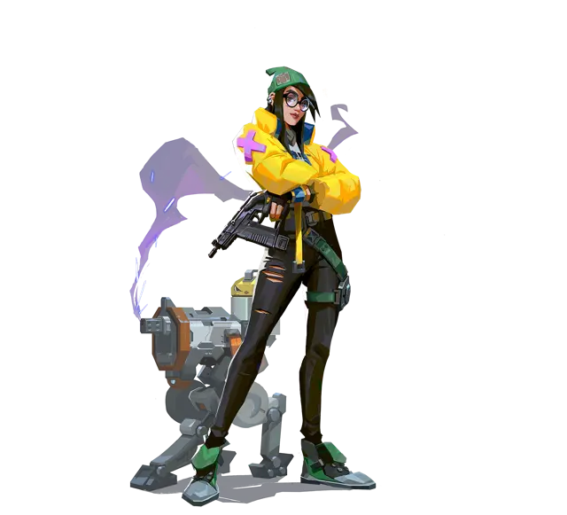
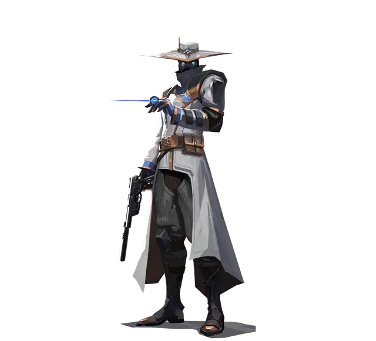
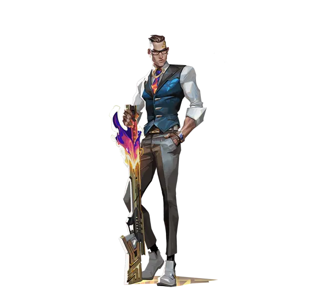
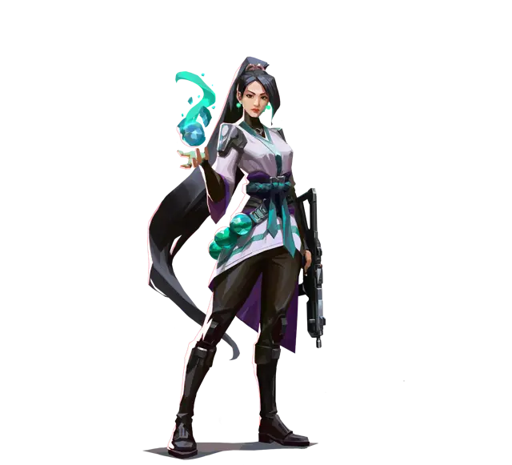
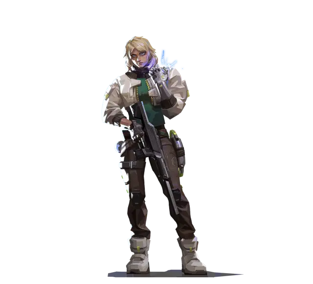
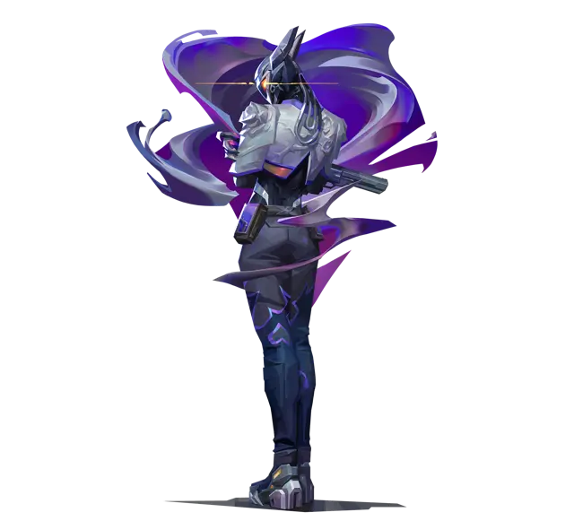
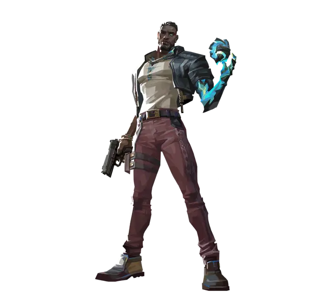

Regla rápida
- Tu trabajo
- Cerrar el flanco
- Setup
- Armado en la compra
- En el rush
- No mueras primero
- Regla
- Cambia el setup
01Tu trabajo
La meta
Cerrar una parte del mapa para que no te coman la espalda, dar la info de esa zona y estar vivo para castigar al que se equivoca.
¿Por qué?
Un iniciador no puede parar un rush solo: la flash se esquiva y el dron se rompe. Un centinela sí, con su utilidad. Y si nadie cuida el flanco, el lurker te gana la ronda.
La parte pasiva
No vas a buscar la primera kill: eso es del duelista con el iniciador. Pones tu utilidad, castigas al que pushea y matas al lurker.
Cierran el mapa o paran rushes
Killjoy y Cypher cierran una zona y te dan la info aunque no estén. Sage, Deadlock, Veto y Vyse paran rushes, pero después quedan más débiles (los centinelas).
Pide ayuda antes
Un centinela solo no aguanta un site. Pide utilidad en la compra: "si vienen a C, humea aquí y métete conmigo".
Tranquilo y atento
Es el rol para el que es paciente y busca el error del rival. Si te gusta ir a los tiros, juega del tridente.
02La compra
Tu utilidad primero
Tu setup es lo que cierra el mapa. Sin cables, torreta o trampa, eres uno más con un arma.
Eco es eco
Si el equipo ahorra, ahorras. Nada de Marshal con Cypher porque sí.
Si cuatro compran, compras
No fuerces solo, y no te quedes en eco si el resto compra.
En la pistola
Qué comprar con cada centinela en la primera ronda (800 créditos). Las de Killjoy y Cypher son las que más vas a usar. En el celular, desliza para ver los demás.
Killjoy
Classic, Nanoswarm, Alarmbot. Otra opción: Bandit o Ghost, Alarmbot.

Cypher
Classic, Cyber Cage (dos), Trapwire (dos). Otra opción: Ghost, Cyber Cage, Trapwire.

Chamber
Classic, Headhunter (seis balas), Trademark.

Sage
Classic, Barrier Orb, Slow Orb (dos). Otra opción: Classic, Escudo ligero, Barrier Orb. Otra opción: Sheriff.

Deadlock
Ghost, Barrier Mesh. Otra opción: Classic, Barrier Mesh, Sonic Sensor.

Vyse
Classic, Shear, Razorvine. Otra opción: Frenzy, Shear, Razorvine. Otra opción: Bandit, Shear.

Veto
Ghost o Bandit, Chokehold. Otra opción: Classic, Escudo ligero, Crosscut.

Después de la pistola
Tu utilidad barata
Cables, trampa o lo que cierre tu zona. Nada de Marshal porque sí: si el equipo ahorra, ahorras.
El setup y un arma corta
Tu setup completo, una SMG o Bulldog y escudo ligero. Juega tu zona, no vayas a buscar.
Setup y mira
Rifle, escudo pesado y el setup entero. Si eres el que juega de mira (Chamber), acá va el Operator.
03En defensa, parte por parte
En la compra
Arma tu setup antes de que empiece la ronda y di dónde vas a jugar. Si pones la utilidad con la ronda empezada, el rival te escucha.
Al contacto
Tu utilidad avisa o frena. Callea al instante cuántos son y por dónde vienen, y frena el rush para que llegue la rotación.
Si entran
No mueras primero. Aguanta lejos y con cobertura hasta que llegue la ayuda: tu trabajo es ganar tiempo.
En el retake
Castigas: cubres el error del rival y matas al lurker. Primero se toman los links, después el site.
La próxima ronda
Cambia el setup. Si siempre pones lo mismo en el mismo lugar, el rival ya sabe dónde romperlo.
Ni muy adelante ni muy atrás
Muy adelante, te comen la espalda. Muy atrás, te la humean y pasan. Piensa por dónde viene el rival y qué le hace tu utilidad.
Tu site primero
Si en el otro site ya hay tres, no te vayas por un ruido: le regalas tu site al lurker.
04En ataque
Cuidas el flanco
Controlas una punta con tu utilidad, sin morir, para que no lurkeen a tu equipo. Si te ven con los demás, son los cinco: cierra la espalda.
Tu utilidad atrás
Cuando el equipo entra, pon tu utilidad cuidando la espalda. No eres el que abre el site.
Juega el costado
Cuida la spike desde lejos o lurkea por mid y agarra al rival de costado cuando rote.
Para la próxima
Si la ronda ya terminó o cambian de site, recoge lo que se pueda recoger.
Cypher o Chamber
Controlando la punta del mapa: larga o baños, con cámara y seguro, sin morir, y con dos cables en una zona para que no lurkeen. Míralo en el tablero de Bind.
05Los centinelas
Toca cada uno y abajo ves cómo se juega.
Killjoy
Cuida al lurker, corta rotaciones y gana timings. Si van los 5 en rush, no debe morir primero.
- La torreta y el Alarmbot cubren una zona sin que estés ahí: te dan la info y te ganan tiempo.
- Los Nanoswarm sirven para frenar el rush o el defuse. Tíralos cuando ya escuchas la spike, no antes.
- La ulti es para el retake o para sacarlos del site: úsala con tu equipo listo para entrar.
Cypher
Cierra una zona y te da la info aunque no esté ahí.
- Pon los cables en la compra: si los pones con la ronda empezada, el rival te escucha y sabe dónde estás.
- Párate donde veas al rival antes de que rompa el cable. Cuando lo escucha y mira el cable, lo matas.
- Guarda siempre una cage para el final de la ronda. Y recoge tus trampas antes de que termine.
- La cámara es info: úsala cuando el equipo la necesita, no para mirar por mirar.
Chamber
Con sus picks agresivos puede ganar o perder el mapa. Como centinela no es muy bueno, y por eso se debate si debería considerarse centinela.
- Juega de mira: es el que ancla un ángulo con Operator o con la Headhunter.
- No se juntan dos que hacen lo mismo: si tu Jett tiene Operator, no estén en el mismo lugar.
- En mapas con un mid importante deja huecos de info: avisa qué no estás viendo.
Sage
El muro dura unos 40 segundos; después no tienes nada para cerrar el mapa.
- El muro sirve para frenar un rush o para plantar tranquilo, no para tirarlo al voleo.
- El Slow Orb frena el rush o el defuse.
- La res es para el que más le sirve a la ronda (el que tiene la utilidad o el arma), y siempre en un lugar seguro.
Deadlock
Pasa lo mismo, pero con los sensores se puede hacer más fuerte en el site.
- Muchos la usan más como iniciador, adentro del tridente, por el GravNet.
- El Sonic Sensor detecta el ruido y aturde: ponlo donde el rival va a correr.
- El Barrier Mesh bloquea el paso un rato: úsalo para cortar un rush o retrasar un retake.
Vyse
Con el muro puede cerrar el mapa, pero sirve más para parar un rush, con las zarzas y el muro.
- En Lotus, en cada site: dos Razorvine en la entrada principal y el Shear cortando la pasada. Ella juega de costado, no de frente a la entrada.
- Arc Rose es una flash que puedes poner incluso atravesando una pared: actívala cuando entren.
- La ulti traba las armas principales del rival en la zona: úsala en el retake o contra la ejecución.
Veto
Puede parar un primer rush con la E, pero después queda bastante endeble.
- Interceptor destruye la utilidad rival que entra en su rango: ponlo donde te van a tirar flashes o mollys.
- Chokehold ensordece y atrapa al que pasa cerca: escóndelo en la entrada del site.
- Crosscut te deja teletransportarte: úsalo para rotar o para salir del site cuando entran todos.
06Con tu equipo
Ellos chocan, tú cubres
Duelista, iniciador y el tercero pelean la zona. Tú cubres los huecos que dejan con tu utilidad.
La otra parte pasiva
Ustedes dos cuidan las puntas y la espalda. Un one-way o una puerta cerrada del humo te libera para cubrir más.
Dile dónde estás
"Killjoy, quédate en B con la torreta": si el equipo sabe dónde está tu setup, juega alrededor de él.
Avisa qué queda
Di qué utilidad tuya sigue viva y qué zona quedó sin cubrir.
07¿Qué haces?
Situaciones de centinela. Elige y mira por qué.
Eres Cypher. Empieza la ronda de defensa y todavía no pusiste los cables.
Si los pones con la ronda empezada, el rival te escucha y sabe dónde estás.
Vienen los cinco en rush a tu site.
El centinela no debe morir primero. Frena, callea y gana tiempo para la rotación.
Escuchas un ruido en el otro site, donde ya hay tres compas.
Con tres allá ya está cubierto. Si te vas por un ruido, le regalas tu site al lurker.
Llevas tres rondas con el mismo setup y en la última te lo rompieron rápido.
El rival ya sabe dónde está. Cambia el setup para que no te lean.
En ataque, tu equipo va a ejecutar A.
No eres el que abre el site. Si cuidas la espalda, nadie los lurkea.
08Cómo practicarlo
Dos setups por site
En el mapa que más juegas, arma dos setups distintos para cada site. Ponlos rápido, en la compra, sin pensar.
Callea tu zona
Una swiftplay de centinela diciendo al empezar dónde juegas y avisando cada vez que tu utilidad detecta algo.
¿Te lurkearon?
En tu última ranked cuenta las rondas en que te comieron la espalda y las que moriste primero en un rush. Esas son las primeras a corregir.
09Errores que veo siempre
10¿Ya lo tienes?
Si puedes marcar todo, ya juegas de centinela. Se guarda en tu navegador.